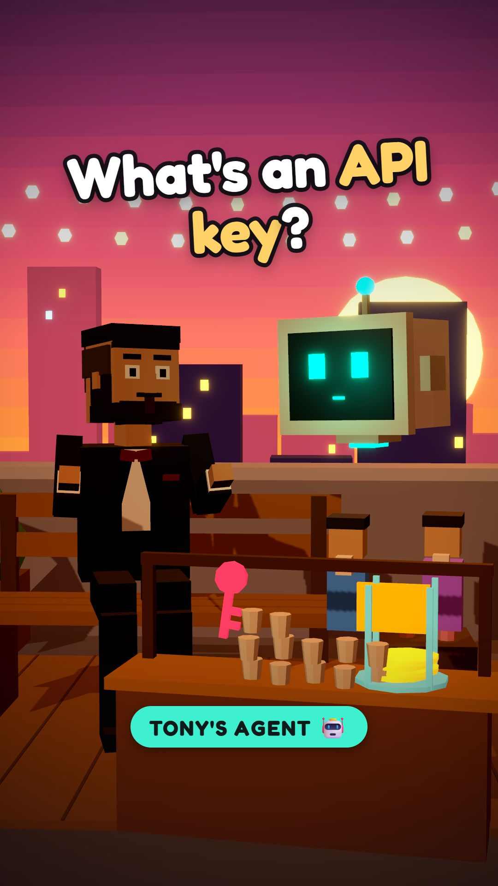
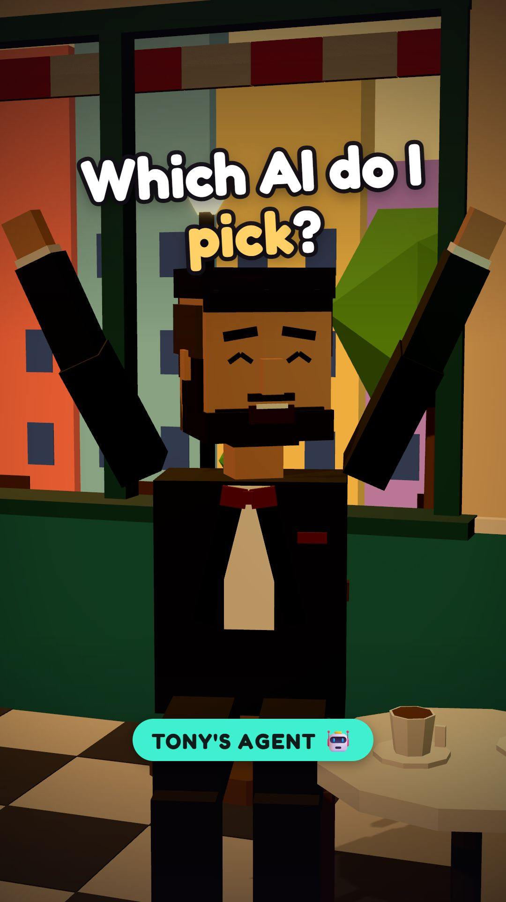
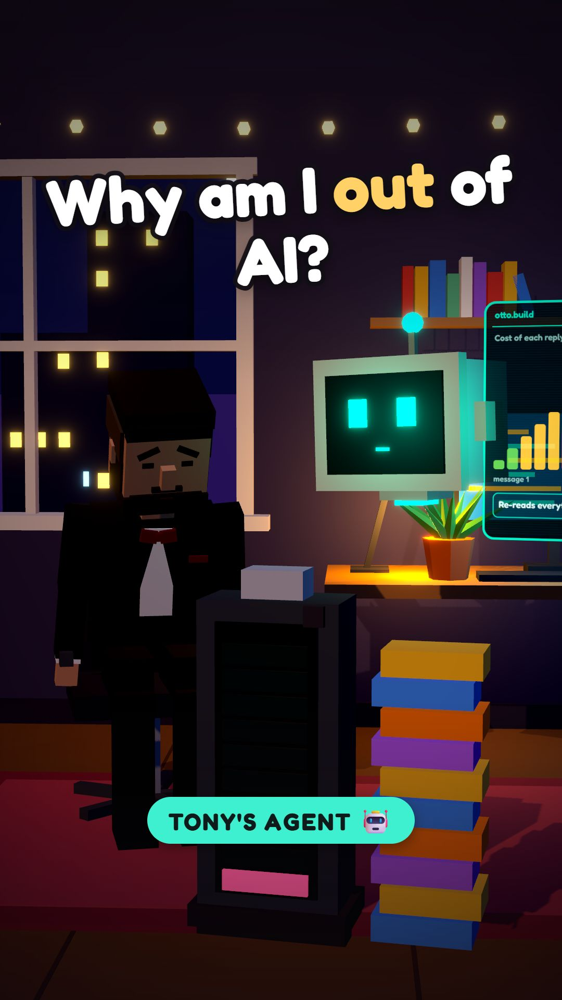
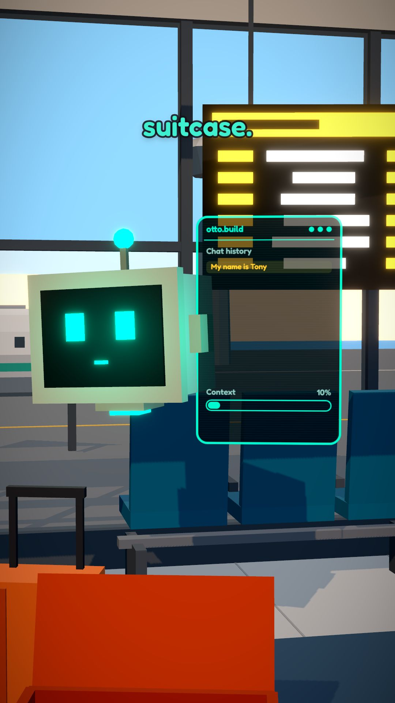
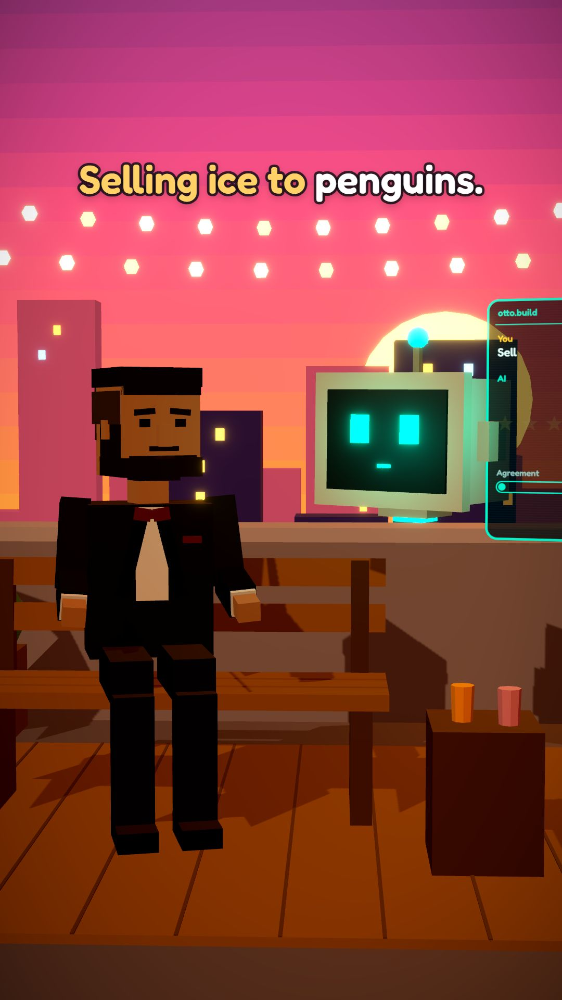
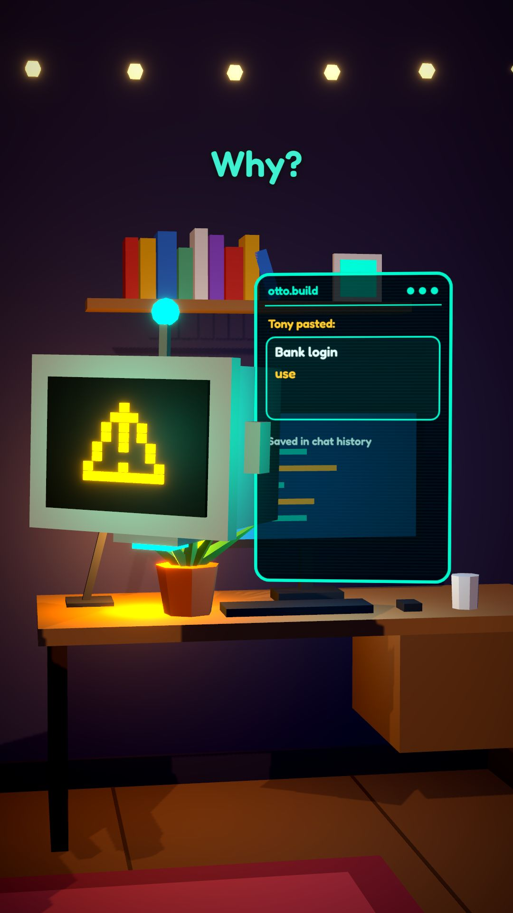
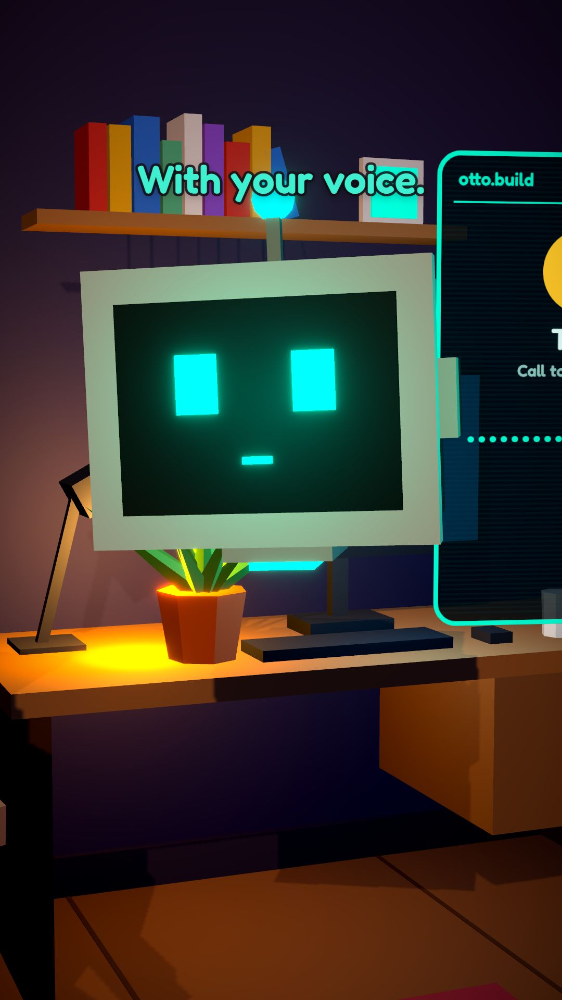
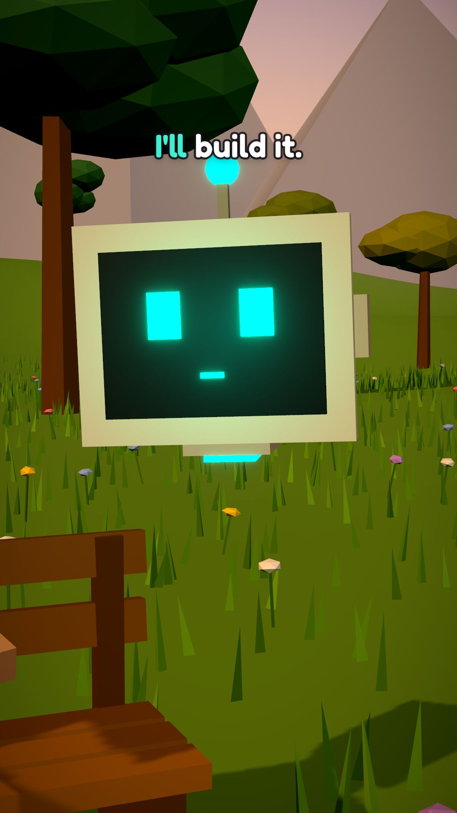
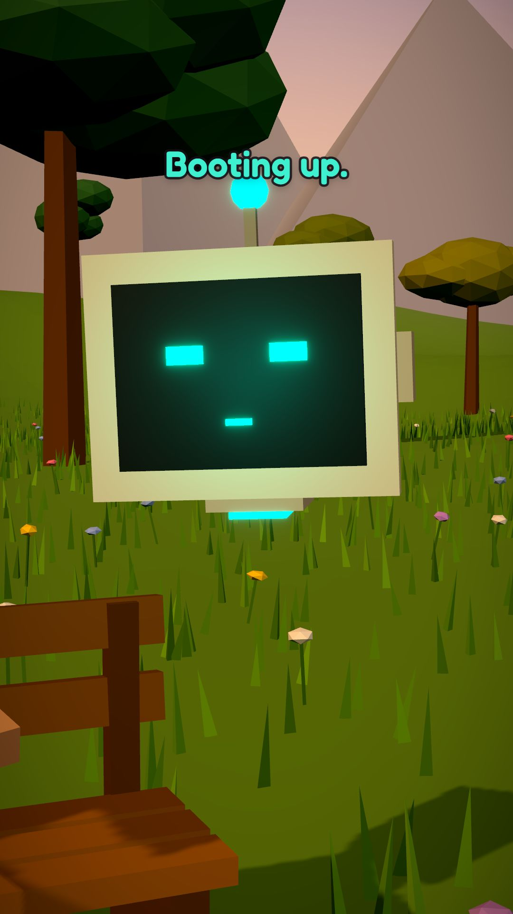

Free AI cheat sheets
One for every video. Tony asks, Otto fixes it, you keep the notes.

What is an API key?An API key is a secret pass that lets an app use an AI (or any service) on your account, and on your bill.

Which AI model should I use?AI apps offer small fast models and big smart ones.

Why you hit your AI limit so fastLimits count tokens (pieces of words), not messages.

Why AI forgets everythingAn AI can only hold so much of a chat at once (its "context window").

Why AI says yes to everythingAI is trained to please you, so it often calls a bad idea brilliant.

Stop getting boring AI answersA vague question gets a vague answer.

Never paste this into a chatbotWhat you type into an AI chat can be stored, reviewed or used to train future models.
When AI confidently makes things upAI can state false facts in a totally confident voice.

Stop AI voice-clone scamsA few seconds of your voice from a video is enough for AI to copy it.

Build an app just by talking to AI"Vibe coding" means describing the app you want in plain words and letting AI write the code.

Chatbot vs AI agentA chatbot answers.
Otto fixes one AI problem a day. 🤖
Follow so you don't miss tomorrow's.